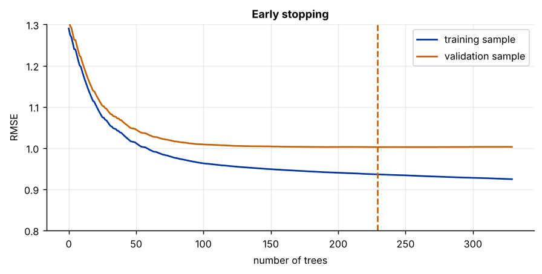
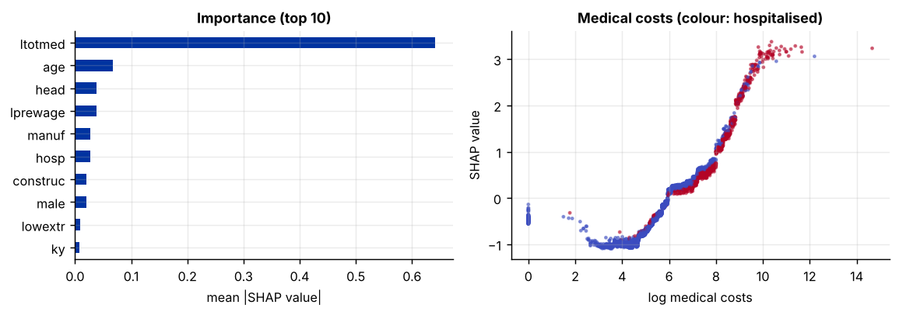
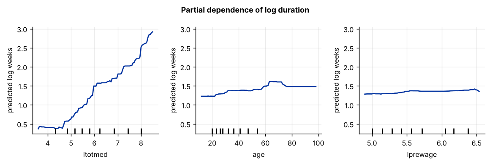

Step 1The question and the model
How long will an injured worker stay out of work? Workers' compensation insurers and labour economists both want to know. The file covers 6,822 workers injured in Kentucky and Michigan around benefit increases studied by Meyer, Viscusi and Durbin (1995). The outcome is the log number of weeks on temporary disability benefits; the eighteen predictors describe the worker (age, sex, marital status, previous earnings), the injury (medical costs, hospitalisation, body part, occupational disease), the industry, the state, and whether the injury happened after the benefit increase. Durations depend on these in strongly nonlinear ways: medical costs matter a great deal up to a point, and the type of injury changes how much.
Gradient boosting (Friedman 2001) builds trees one after another. Each new tree is fitted to the errors that the current model still makes and is added with a small weight \(\eta\), the learning rate:
A random forest averages many independent deep trees; boosting adds many small dependent ones, each correcting the last. XGBoost (Chen and Guestrin 2016) adds penalties on tree size and leaf weights, and is the standard implementation in applied work.
| Variable | Definition | Variable | Definition |
|---|---|---|---|
ldurat |
Log weeks on benefits (outcome) | ltotmed |
Log total medical costs |
afchnge |
1 if injured after the benefit increase | hosp |
1 if hospitalised |
highearn |
1 if earnings above the benefit cap | head … lowextr |
Body part injured (dummies) |
lprewage |
Log weekly wage before the injury | occdis |
1 if occupational disease |
age, male, married |
Worker characteristics | manuf, construc |
Industry dummies |
ky |
1 if Kentucky (0 = Michigan) |
Step 2Load the data and confirm the starting point
import numpy as np
import pandas as pd
from sklearn.model_selection import KFold, cross_val_score
from sklearn.pipeline import make_pipeline
from sklearn.preprocessing import StandardScaler
from sklearn.linear_model import LassoCV, LinearRegression
from sklearn.ensemble import RandomForestRegressor
df = pd.read_csv("injury.csv")
y, X = df["ldurat"], df.drop(columns="ldurat").astype(float)
print(f"N = {len(df)} workers, p = {X.shape[1]} predictors; median duration {np.exp(y.median()):.1f} weeks")
cv = KFold(5, shuffle=True, random_state=0)
rmse = lambda m: (-cross_val_score(m, X, y, cv=cv, scoring="neg_mean_squared_error").mean()) ** .5
r_l = rmse(make_pipeline(StandardScaler(), LassoCV(cv=5)))
r_f = rmse(RandomForestRegressor(n_estimators=300, min_samples_leaf=5, max_features=.5, random_state=0, n_jobs=-1))
print(f"cross-validated RMSE: LASSO {r_l:.4f}, random forest {r_f:.4f}, forest gain {1 - r_f / r_l:.1%}")N = 6822 workers, p = 18 predictors; median duration 4.0 weeks cross-validated RMSE: LASSO 1.0832, random forest 0.9828, forest gain 9.3%
The forest beats LASSO by more than the 5 % threshold (Rule A3), so the relationship is nonlinear, and with almost 7,000 workers there is enough data to tune a boosted model (Rule A5).
Validation must respect the structure of the data
Here every row is a different worker, so ordinary shuffled folds are fine. If the same unit appears several times (a firm over years, a route in several years), keep all of its rows in the same fold (GroupKFold); otherwise the model memorises units and looks better than it is. With time series, validate forward in time only (see the Elastic net guide). The nonlinearity test is only as honest as its folds: on panel data, shuffled folds can make a forest look far better than it is.
How to write it: data section
The sample contains 6,822 workers injured in Kentucky and Michigan (Meyer, Viscusi and Durbin 1995). The outcome is the log number of weeks on temporary disability benefits; eighteen predictors describe the worker, the injury, the industry, the state and the timing of the injury relative to a benefit increase. In five-fold cross-validation a random forest predicts log durations with an error about 8 % lower than LASSO, so we model durations with gradient-boosted trees.
Step 3The parameters that matter, and early stopping
Boosting has more tuning parameters than a forest, and unlike a forest it can overfit if it runs too long. The ones that matter most:
- learning rate \(\eta\): smaller is better but needs more trees; 0.03 to 0.1 is usual;
- number of trees: chosen by early stopping, i.e. stop adding trees when the error on a validation set has not improved for a while;
max_depth: the depth of each tree, which sets how many variables can interact;min_child_weight,subsample,colsample_bytree: regularisation, as in a forest.
import xgboost as xgb
import matplotlib.pyplot as plt
from sklearn.model_selection import train_test_split
Xtr, Xva, ytr, yva = train_test_split(X, y, test_size=.25, random_state=0)
m = xgb.XGBRegressor(n_estimators=3000, learning_rate=.03, max_depth=3, subsample=.8, colsample_bytree=.8,
min_child_weight=5, early_stopping_rounds=100, eval_metric="rmse", random_state=0, n_jobs=-1)
m.fit(Xtr, ytr, eval_set=[(Xtr, ytr), (Xva, yva)], verbose=False)
h = m.evals_result(); n_best = m.best_iteration + 1
print(f"early stopping: {n_best} trees; validation RMSE {h['validation_1']['rmse'][m.best_iteration]:.4f}")
fig, ax = plt.subplots()
ax.plot(h["validation_0"]["rmse"], label="training sample"); ax.plot(h["validation_1"]["rmse"], label="validation sample")
ax.axvline(m.best_iteration, ls="--", color="#c46000"); ax.set_ylim(.8, 1.3)
ax.set_xlabel("number of trees"); ax.set_ylabel("RMSE"); ax.set_title("Early stopping"); ax.legend()early stopping: 230 trees; validation RMSE 1.0021

The training error keeps falling as trees are added; the validation error falls, flattens and then creeps up as the model starts to fit noise. Early stopping picks the number of trees at the bottom of the validation curve.
Step 4Tune depth and regularisation
from sklearn.model_selection import GridSearchCV
base = xgb.XGBRegressor(n_estimators=n_best, learning_rate=.03, subsample=.8, colsample_bytree=.8, random_state=0, n_jobs=-1)
grid = GridSearchCV(base, {"max_depth": [2, 3, 4, 6], "min_child_weight": [1, 5, 20]}, cv=cv,
scoring="neg_mean_squared_error").fit(X, y)
res = pd.DataFrame(grid.cv_results_["params"]).assign(RMSE=np.sqrt(-grid.cv_results_["mean_test_score"]))
print(res.pivot(index="max_depth", columns="min_child_weight", values="RMSE").round(4))
best = grid.best_params_; print("best:", best)min_child_weight 1 5 20
max_depth
2 0.9831 0.9830 0.9832
3 0.9759 0.9758 0.9761
4 0.9768 0.9762 0.9761
6 0.9830 0.9816 0.9795
best: {'max_depth': 3, 'min_child_weight': 5}Trees of depth 3 do best: durations depend on interactions between a few variables at a time, not on deep combinations, and depth 6 overfits. The minimum leaf weight hardly matters.
Step 5A fair comparison with the alternatives
Nested cross-validation: the boosted model is tuned inside each outer training sample, then scored on the held-out fold.
from sklearn.dummy import DummyRegressor
outer = KFold(5, shuffle=True, random_state=1)
inner = GridSearchCV(xgb.XGBRegressor(n_estimators=n_best, learning_rate=.03, subsample=.8, colsample_bytree=.8, random_state=0, n_jobs=-1),
{"max_depth": [2, 3, 4], "min_child_weight": [5, 20]}, cv=4, scoring="neg_mean_squared_error")
models = {"mean only": DummyRegressor(), "OLS": make_pipeline(StandardScaler(), LinearRegression()),
"LASSO": make_pipeline(StandardScaler(), LassoCV(cv=5)),
"random forest": RandomForestRegressor(n_estimators=300, min_samples_leaf=5, max_features=.5, random_state=0, n_jobs=-1),
"XGBoost (tuned)": inner}
out = {}
for k, mm in models.items():
s = (-cross_val_score(mm, X, y, cv=outer, scoring="neg_mean_squared_error")) ** .5
out[k] = {"RMSE": s.mean(), "s.d. across folds": s.std(), "R² (out of sample)": 1 - s.mean() ** 2 / y.var()}
out = pd.DataFrame(out).T.round(4)
print(out)RMSE s.d. across folds R² (out of sample) mean only 1.3016 0.0373 0.0009 OLS 1.0830 0.0322 0.3083 LASSO 1.0828 0.0325 0.3086 random forest 0.9833 0.0200 0.4298 XGBoost (tuned) 0.9780 0.0197 0.4359
Step 6Open the black box: SHAP values
SHAP values (Lundberg and Lee 2017) split each prediction into additive contributions from each predictor, measured from the average prediction. XGBoost computes them exactly for trees (pred_contribs=True).
fin = xgb.XGBRegressor(n_estimators=n_best, learning_rate=.03, subsample=.8, colsample_bytree=.8, random_state=0, **best).fit(X, y)
shap = fin.get_booster().predict(xgb.DMatrix(X), pred_contribs=True)[:, :-1] # last column = bias
imp = pd.Series(np.abs(shap).mean(0), index=X.columns).sort_values(ascending=False)
print("mean |SHAP| (log weeks):"); print(imp.round(4).to_string())
fig, axes = plt.subplots(1, 2, figsize=(9, 3.2))
imp[:10][::-1].plot.barh(ax=axes[0], color="#0033a0"); axes[0].set_xlabel("mean |SHAP value|"); axes[0].set_title("Importance (top 10)")
j = list(X.columns).index("ltotmed")
axes[1].scatter(X["ltotmed"], shap[:, j], s=3, c=X["hosp"], cmap="coolwarm", alpha=.5)
axes[1].set_xlabel("log medical costs"); axes[1].set_ylabel("SHAP value"); axes[1].set_title("Medical costs (colour: hospitalised)")
fig.tight_layout()mean |SHAP| (log weeks): ltotmed 0.6413 age 0.0677 head 0.0382 lprewage 0.0379 manuf 0.0274 hosp 0.0270 construc 0.0209 male 0.0208 lowextr 0.0094 ky 0.0084 lowback 0.0082 afchnge 0.0071 married 0.0050 trunk 0.0041 upextr 0.0023 occdis 0.0023 neck 0.0013 highearn 0.0011

Step 7Partial dependence
from sklearn.inspection import PartialDependenceDisplay
top3 = [c for c in imp.index if X[c].nunique() > 2][:3]
fig, axes = plt.subplots(1, 3, figsize=(9, 3))
PartialDependenceDisplay.from_estimator(fin, X, top3, ax=axes)
for a in axes: a.set_ylabel("predicted log weeks")
fig.suptitle("Partial dependence of log duration", fontsize=10, fontweight="bold"); fig.tight_layout()
Medical costs do almost all the work: predicted durations are flat for the cheapest injuries (log costs below about 4.5, roughly $90) and then rise steeply. Age and the previous wage shift predictions far less. These are predictive patterns, not causal effects. The benefit increase (afchnge), for example, is the treatment in the original study; its causal effect needs a difference-in-differences design (see the Causal Inference Guide), not a prediction model.
Step 8Write it up
print(out)
print("\nfinal model:", {**best, "learning_rate": .03, "n_estimators": n_best, "subsample": .8, "colsample_bytree": .8})
print("importance (mean |SHAP|):", ", ".join(f"{k} {v:.3f}" for k, v in imp[:6].items())) RMSE s.d. across folds R² (out of sample)
mean only 1.3016 0.0373 0.0009
OLS 1.0830 0.0322 0.3083
LASSO 1.0828 0.0325 0.3086
random forest 0.9833 0.0200 0.4298
XGBoost (tuned) 0.9780 0.0197 0.4359
final model: {'max_depth': 3, 'min_child_weight': 5, 'learning_rate': 0.03, 'n_estimators': 230, 'subsample': 0.8, 'colsample_bytree': 0.8}
importance (mean |SHAP|): ltotmed 0.641, age 0.068, head 0.038, lprewage 0.038, manuf 0.027, hosp 0.027How to write it: results
We predict log benefit durations with gradient-boosted trees (XGBoost) with a learning rate of 0.03, choosing the number of trees by early stopping and the tree depth and minimum leaf weight by five-fold cross-validation. In nested cross-validation the boosted model has the lowest out-of-sample error of the models compared: it explains 44 % of the out-of-sample variance, against 43 % for a random forest and 31 % for OLS and LASSO (Table X). SHAP values show that medical costs dominate the predictions (a mean absolute contribution of 0.64 log weeks, ten times that of the next predictor, age), followed by head injuries, the previous wage, industry and hospitalisation. The partial-dependence plot for medical costs is flat for the cheapest injuries and then rises steeply and almost linearly in log costs, a threshold that a linear model misses; age and the previous wage matter much less. We interpret these patterns as predictive, not causal.
Checklist for the paper
- Build validation folds that respect the data's structure (groups, time).
- Report the learning rate, early stopping and the tuned depth and regularisation.
- Compare with a random forest and with linear models in nested cross-validation.
- Interpret with SHAP values and partial dependence, and say that the patterns are predictive.